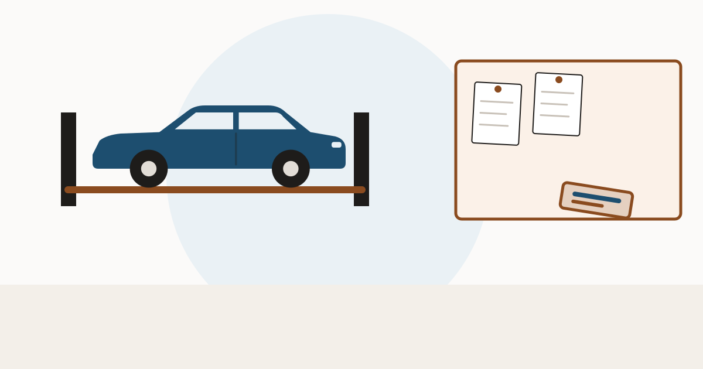

Buying a used car in Arizona: restored salvage and the level inspection

Arizona's salvage system is built around one idea: prove where the parts came from. The inspection is as much about theft as about safety, and the paperwork requirement falls on the seller before you hand over money.
What makes a car salvage in Arizona
A salvage vehicle is one — other than a nonrepairable vehicle — that has been stolen, wrecked, destroyed, flood or water damaged, or otherwise damaged such that the owner, leasing company, financial institution or insurer considers it uneconomical to repair (A.R.S. § 28-2091). A nonrepairable vehicle has no resale value except as parts or scrap.
Notice there is no percentage. Arizona leaves it to a judgement about economics, which means two similar cars can be treated differently depending on who was holding the file.
Deadlines that leave a trail
- After settling a total loss, the insurer must apply to the department within thirty days of the title being properly assigned to it.
- If the insurer cannot get the title documents, it may still apply within thirty days of the owner accepting the settlement, attesting to at least two written attempts to obtain them.
- An owner keeping a salvage or nonrepairable vehicle must comply before receiving the settlement or disposing of the car.
These deadlines are why Arizona records tend to be tightly dated. A gap between an apparent loss and a filing is something to ask about.
Dates in the title record are what make an Arizona story check out. A history report is where that sequence appears.
Run a VIN check at VinCheckUp Advertising disclosure: the link above is an affiliate link. If you buy a report through it, this site may earn a commission at no extra cost to you. It does not change what is written on this page.The restored salvage title and its inspection
A salvage vehicle that is rebuilt cannot be transferred until a restored salvage certificate of title is issued (A.R.S. § 28-2095). The department performs a level two or level three inspection to confirm the vehicle's identity, which may include reviewing bills of sale and invoices for component parts. If the department cannot carry out a level three inspection within twenty days of a request, it must inspect within forty-eight hours after that period ends.
The component-part rules are the sharp edge. The owner must submit invoices, notarised bills of sale or other proof of ownership for parts. Where proper documentation is missing, the department may seize the component part — and a part found to be stolen must be seized.
The disclosure you are owed
A seller who knows a restored salvage title has been issued must clearly and conspicuously disclose in writing or electronically, before the sale is completed, that the vehicle is a restored salvage vehicle. The same obligation applies to selling a car on a salvage certificate. Violations are a class 2 misdemeanour unless otherwise provided.
There is also a quieter rule worth knowing: a repairer who is not the owner and who replaces a component bearing a VIN must notify the owner in writing. If a car has had such a part replaced, somebody wrote it down.
Buying checklist for Arizona
- Ask straight out whether a salvage or restored salvage title has ever been issued, and get the answer in writing.
- Ask for the component-part invoices and bills of sale used at the inspection.
- Match the dates in the record against the thirty-day filing rules.
- Check whether the brand travelled with the car from another state — see title brands and title washing.
- Inspect independently, with attention to structure — see signs of frame damage.
Check for a salvage or restored salvage record before you accept a seller's account of the repairs.
Run a VIN check at VinCheckUp Advertising disclosure: the link above is an affiliate link. If you buy a report through it, this site may earn a commission at no extra cost to you. It does not change what is written on this page.